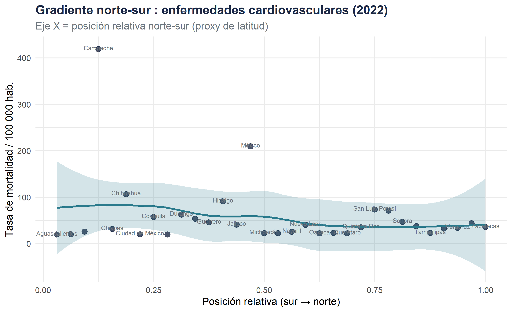

Bloque B — Distribución espacial, gradientes regionales y clusters, 2000–2022
Fecha de publicación
mayo 2026
Bloque B · Nivel 2 bisVariables : state · year · cause
Introducción analítica
Este módulo constituye el primer nivel de la rama espacial del análisis. A diferencia del Bloque A —que progresa temporalmente—, aquí el espacio es la variable organizadora principal.
El análisis por entidades federativas permite :
Identificar gradientes norte-sur, costa-interior en la mortalidad
Detectar clusters espaciales (estados con perfiles similares)
Examinar si las disparidades regionales se han atenuado o ampliado en el tiempo
Tip
Articulación con el Bloque A
El Nivel ④ del Bloque A introduce el estado como variable de desagregación dentro de la lógica sanitaria. Aquí, la perspectiva se invierte : el territorio es el punto de partida, no la causa.
Taux de mortalité moyen par état (toutes causes, 2000–2022)
# Cause dominante par étatcause_dominante <- mort_state_cause_last |>group_by(state) |>slice_max(rate_100k, n =1) |>ungroup()mx_cause <- mx_grid |>left_join(cause_dominante, by ="state") |>mutate(cause_short =case_when( cause =="Enfermedades cardiovasculares"~"Cardiovascular", cause =="Diabetes mellitus"~"Diabetes", cause =="Tumores malignos"~"Cáncer", cause =="Causas externas"~"Ext.",TRUE~"Otras" ))tm_shape(mx_cause) +tm_polygons(col ="cause_short",title ="Causa principal",palette ="Set2",border.col ="white",border.alpha =0.6 ) +tm_layout(main.title ="Causa principal de mortalidad por Estado (2022)",main.title.size =1,legend.outside =TRUE,frame =FALSE )
mort_state |>filter(year ==2022, cause =="Enfermedades cardiovasculares") |>group_by(state, lat_rank) |>summarise(rate_100k =mean(rate_100k), .groups ="drop") |>ggplot(aes(x = lat_rank, y = rate_100k)) +geom_point(color ="#1a2744", size =3, alpha =0.8) +geom_smooth(method ="loess", se =TRUE,color ="#2a7a8c", fill ="#2a7a8c", alpha =0.2) +geom_text(aes(label = state), size =2.8, nudge_y =3,color ="#6c757d", check_overlap =TRUE) +labs(title ="Gradiente norte-sur : enfermedades cardiovasculares (2022)",subtitle ="Eje X = posición relativa norte-sur (proxy de latitud)",x ="Posición relativa (sur → norte)",y ="Tasa de mortalidad / 100 000 hab." ) +theme_minimal(base_size =13) +theme(plot.title =element_text(face ="bold", color ="#1a2744"),plot.subtitle =element_text(color ="#6c757d") )

Figura 1: Gradient du taux de mortalité selon la latitude (proxy)
3 · Typologies régionales (clustering)
# ── Clustering k-means sur profil causal ─────────────────────────────# (en production : ajouter standardisation + Moran's I pour autocorrélation)# Matrice état × cause (taux 2022)mat_cluster <- mort_state_cause_last |>select(state, cause, rate_100k) |>pivot_wider(names_from = cause, values_from = rate_100k,values_fill =0) |>column_to_rownames("state") |>scale()set.seed(123)k <-4# nombre de clusters (choisir via silhouette en pratique)km <-kmeans(mat_cluster, centers = k, nstart =25)clusters_df <-tibble(state =rownames(mat_cluster),cluster =factor(km$cluster, labels =paste0("Cluster ", 1:k)))# Profils des clustersmort_state_cause_last |>left_join(clusters_df, by ="state") |>group_by(cluster, cause) |>summarise(rate_100k =mean(rate_100k), .groups ="drop") |>mutate(cause =str_wrap(cause, 20)) |>ggplot(aes(x =reorder(cause, rate_100k),y = rate_100k, fill = cluster)) +geom_col(position ="dodge", width =0.7, alpha =0.9) +coord_flip() +scale_fill_brewer(palette ="Set2") +labs(title ="Perfil de mortalidad por cluster de estados (2022)",subtitle ="Clustering k-means (k=4) sobre tasa por 100 000 hab.",x =NULL, y ="Tasa / 100 000 hab.", fill ="Cluster" ) +theme_minimal(base_size =12) +theme(legend.position ="bottom",plot.title =element_text(face ="bold", color ="#1a2744"),panel.grid.minor =element_blank() )
Profil de mortalité par cluster d’états
# Tableau des états par clusterclusters_df |>left_join(mort_state_total, by ="state") |>arrange(cluster, desc(mean_rate)) |>select(Cluster = cluster, Estado = state,`Tasa media`= mean_rate) |>mutate(`Tasa media`=round(`Tasa media`, 1)) |>kable(caption ="Asignación de estados por cluster de mortalidad") |>kable_styling(bootstrap_options =c("striped", "hover", "condensed"),full_width =FALSE) |>pack_rows(index =table(clusters_df$cluster))
Asignación de estados por cluster de mortalidad
Cluster
Estado
Tasa media
Cluster 1
Cluster 1
Nuevo León
34.7
Cluster 1
Guanajuato
34.3
Cluster 1
San Luis Potosí
33.7
Cluster 1
Yucatán
32.9
Cluster 1
Zacatecas
31.9
Cluster 1
Oaxaca
28.9
Cluster 2
Cluster 2
Campeche
39.6
Cluster 3
Cluster 3
Aguascalientes
32.7
Cluster 4
Cluster 4
Nayarit
40.4
Cluster 4
Sinaloa
39.9
Cluster 4
México
39.3
Cluster 4
Tabasco
37.3
Cluster 4
Baja California
37.2
Cluster 4
Hidalgo
37.1
Cluster 4
Coahuila
37.0
Cluster 4
Chiapas
36.4
Cluster 4
Colima
36.3
Cluster 4
Puebla
36.2
Cluster 4
Ciudad de México
35.9
Cluster 4
Tlaxcala
35.2
Cluster 4
Querétaro
35.1
Cluster 4
Guerrero
35.0
Cluster 4
Durango
34.4
Cluster 4
Chihuahua
34.3
Cluster 4
Veracruz
32.6
Cluster 4
Quintana Roo
32.4
Cluster 4
Jalisco
30.8
Cluster 4
Michoacán
30.7
Cluster 4
Morelos
30.4
Cluster 4
Tamaulipas
29.5
Cluster 4
Baja California Sur
28.5
Cluster 4
Sonora
27.9
4 · Indicateurs de dispersion spatiale
# Coefficient de variation inter-étatique par annéecv_by_year <- mort_state |>group_by(year, state) |>summarise(rate_100k =mean(rate_100k), .groups ="drop") |>group_by(year) |>summarise(mean_rate =mean(rate_100k),sd_rate =sd(rate_100k),cv = sd_rate / mean_rate *100,range_ =max(rate_100k) -min(rate_100k) )p1 <-ggplot(cv_by_year, aes(x = year, y = cv)) +geom_line(color ="#2a7a8c", linewidth =1.1) +geom_point(size =2.5, color ="#2a7a8c") +labs(title ="Coeficiente de variación inter-estatal",x =NULL, y ="CV (%)") +theme_minimal(base_size =12) +theme(plot.title =element_text(face ="bold", color ="#1a2744"))p2 <-ggplot(cv_by_year, aes(x = year, y = range_)) +geom_ribbon(aes(ymin = mean_rate - sd_rate,ymax = mean_rate + sd_rate),fill ="#2a7a8c", alpha =0.2) +geom_line(aes(y = mean_rate), color ="#1a2744", linewidth =1.1) +labs(title ="Media ± desv. estándar inter-estatal",x =NULL, y ="Tasa / 100 000 hab.") +theme_minimal(base_size =12) +theme(plot.title =element_text(face ="bold", color ="#1a2744"))# patchwork : côte à côtelibrary(patchwork)p1 | p2
Évolution de la dispersion inter-étatique de la mortalité
Nota
Note méthodologique — Autocorrélation spatiale
En production, il est recommandé de calculer l’indice de Moran (via spdep) pour tester l’autocorrélation spatiale des taux de mortalité. Un I de Moran significatif et positif confirmerait l’existence de clusters spatiaux.